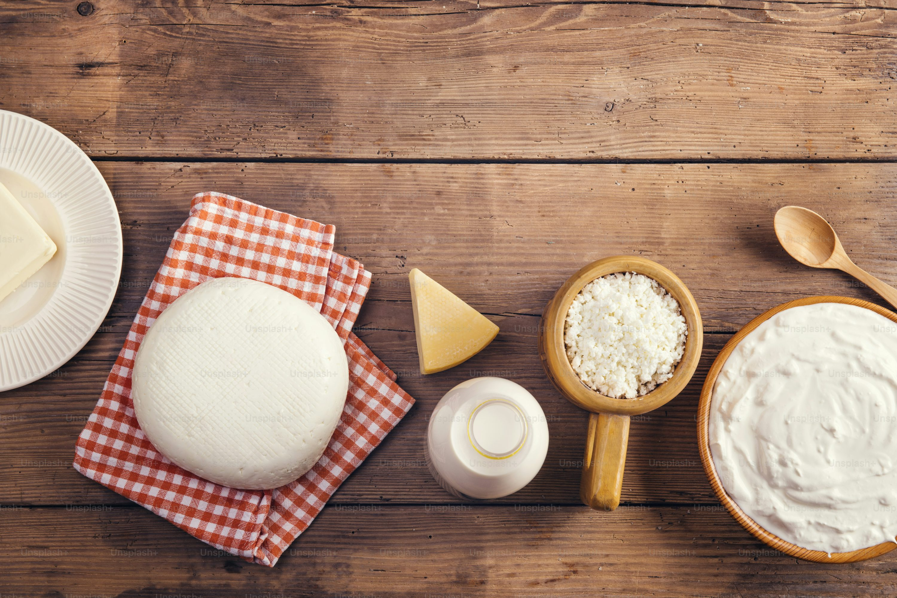

A pecuária vai além da carne e do leite. Ela também nos dá produtos como queijo, manteiga, iogurte e até o couro usado em roupas e acessórios. Esses itens fazem parte do nosso dia a dia e mostram como a produção rural está presente na vida urbana.
Tudo isso vem do trabalho no campo. Por isso, mesmo quem vive na cidade depende, muitas vezes sem perceber, da pecuária para se alimentar, se vestir e viver com mais conforto.
